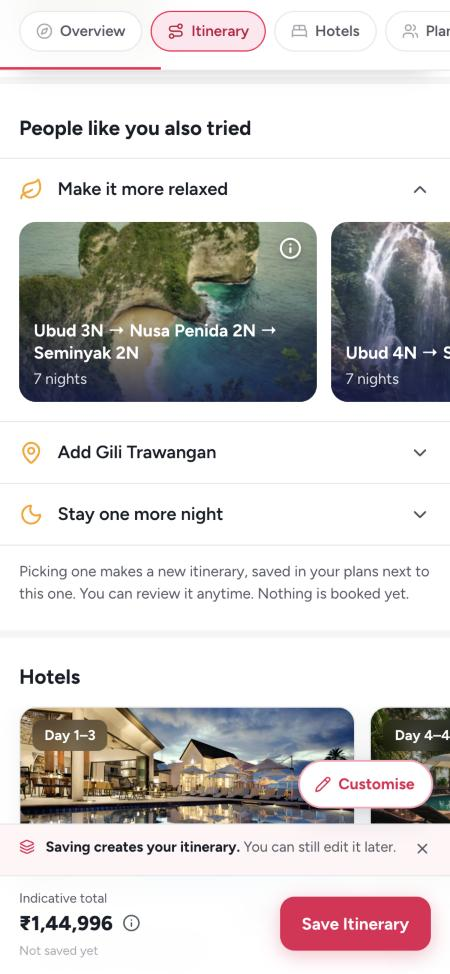
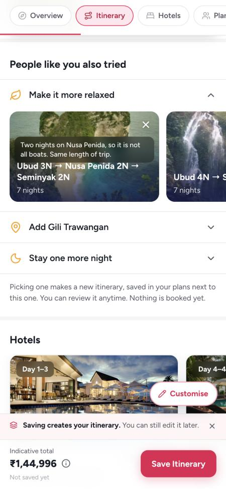
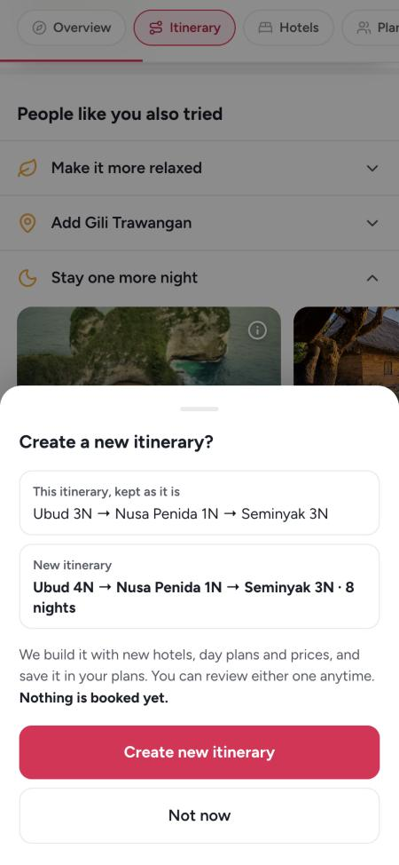
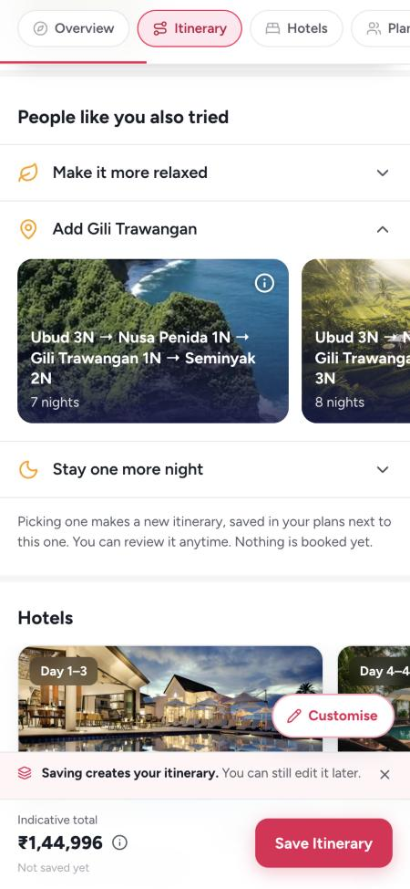
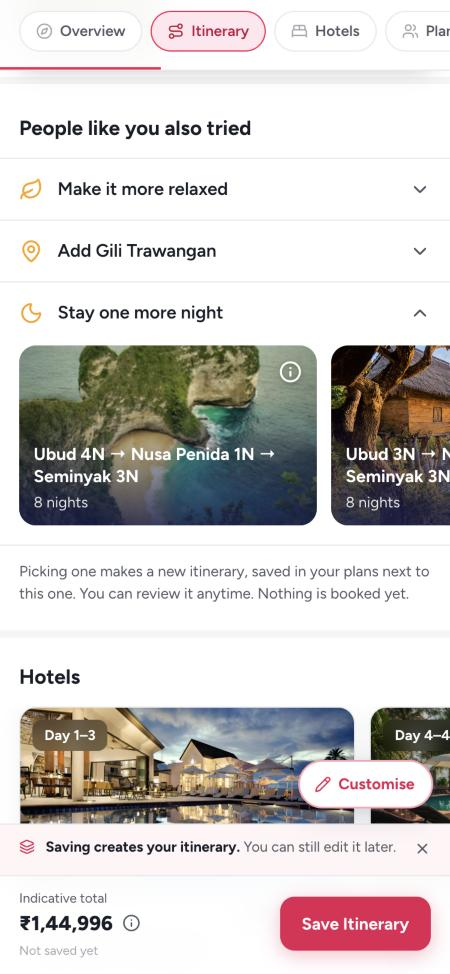
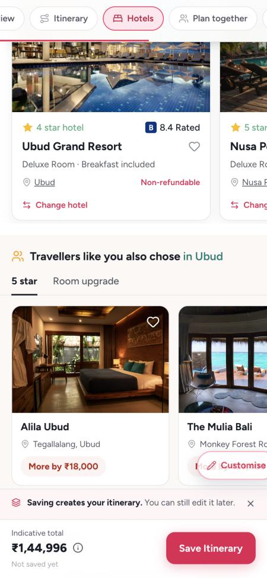
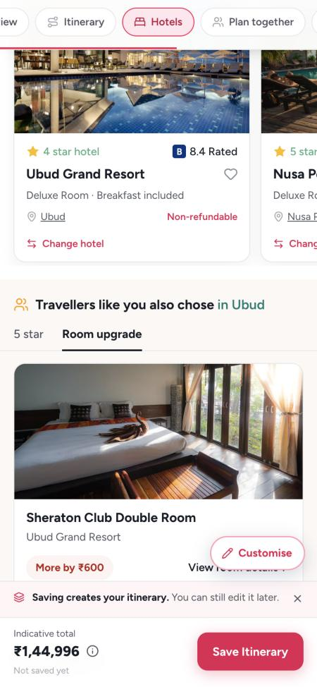
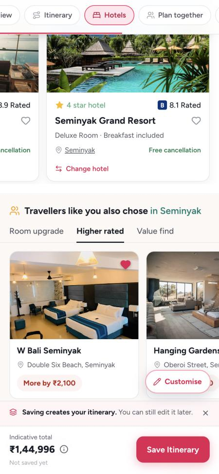
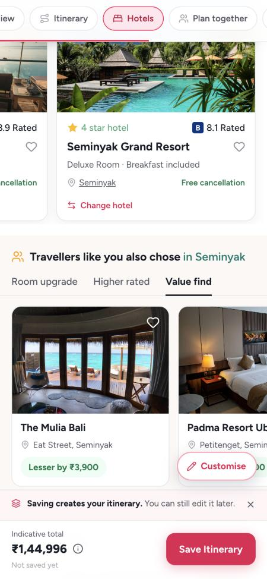

On the itinerary, two new places suggest a better version of the trip the couple is looking at. After Itinerary at a glance, People like you also tried offers other routes: more relaxed, one more city, or one more night. Under the hotels, Travellers like you also chose offers a 5 star, a better room, a higher rated hotel or a value find for the stay in view. Every suggestion follows rules built on what our couples actually book. Open the links on a phone or in a narrow window.
The Bali draft is Ubud 3N · Nusa Penida 1N · Seminyak 3N, 7 nights, 27 Dec to 3 Jan, 2 travellers. Every example on this page is worked on that trip. Hotels and prices in the prototype are samples.
Scroll past Itinerary at a glance. Three rows, the first open. Tap the i on a card for why we suggest it; tap the card to make it a new itinerary.
Under the hotel cards. Swipe the hotels: the title and the tabs follow the stay in view (Ubud shows 5 star and Room upgrade; Seminyak adds Higher rated and Value find).
Sold trips from the last 12 months (Postgres, converted and not cancelled): Bali 3,589, Vietnam 3,082, Thailand 2,536. Share = the share of booked trips that stay in that city. Approximate: Postgres runs a few bookings a month below the revenue dashboard.
| Country | Core cities (in most trips) | Cities people add (10% or more) | Rarely booked (under 10%) |
|---|---|---|---|
| Bali | Ubud 98%, Seminyak 84% | Nusa Penida 32% (1.3 nights), Gili Trawangan 27% (1.7 nights) | Kuta 9%, Nusa Dua 7%, Canggu 2%, Uluwatu 2% |
| Vietnam | Hanoi 80%, Phu Quoc 71%, Da Nang 67% | Ha Long cruise 18% (1 night), Ho Chi Minh City 14% (1.7), Sapa 12% (1.5) | Hoi An 5%, Ninh Binh, Nha Trang, Da Lat under 1% |
| Thailand | Phuket 91%, Krabi 80% | Bangkok 35% (2.4 nights), Phi Phi 20% (1.4), Pattaya 11% (2.3) | Koh Samui 5%, Chiang Mai 2% |
After Itinerary at a glance, before Hotels. Three rows, closed until tapped and one open at a time (the first open on arrival): Make it more relaxed, Add {city}, Stay one more night. An open row shows 2 to 3 photo cards, swiped. A card shows the route with nights per stop and the total nights, nothing else. The i on a card says why, in one line.
First, real routes our couples booked in that country in the last 12 months that pass the row's rules. If fewer than 2 pass, the rest are made from the couple's own route by the row's rules below. Real routes are ranked by how often they were booked.
The country, the start date and the travellers. A route is never the same as the trip on screen, and no two cards in a row are the same route.
A row with no card that passes its rules is hidden. The section is hidden when all three are, on a trip opened read-only, and on a booked trip.
A sheet asks first: Create a new itinerary? It shows this itinerary, kept as it is, and the new one with its nights. Create new itinerary builds it with new hotels, day plans and prices and saves it in the couple's plans next to this one. Nothing is booked; Not now closes it.



A route qualifies only if all four hold:
Relaxed score = 10 × nights per city − 6 × one-night stops − 4 × hotel changes − 2 × transfer hours
Two moves, in this order. A one-night stop gets a second night, taken from the longest stay (never leaving a stay under two nights). Then one stop fewer: the shortest stay is dropped (middle stops before the first and last), and its nights go to the stays that remain. A city is only dropped if the trip still has as many cities as at least 15% of booked trips of that length have.
Closest to the trip first: fewest cities dropped, then the bigger score gain, then the most booked.
| On the Bali draft | Nights per city | One-night stops | Hotel changes | Transfers | Score |
|---|---|---|---|---|---|
| Now: Ubud 3N · Nusa Penida 1N · Seminyak 3N | 2.3 | 1 | 2 | 2h | 5 |
| Card 1: Ubud 3N · Nusa Penida 2N · Seminyak 2N | 2.3 | 0 | 2 | 2h | 11 (+6) |
| Card 2: Ubud 4N · Seminyak 3N | 3.5 | 0 | 1 | 0.5h | 30 (+25) |
Card 1 comes first because it keeps every city. A 7-night Bali trip with 2 cities is a shape 26% of our couples book, so card 2 passes.
One city per trip, named in the row title (Add Gili Trawangan). It must pass all of these:
Where booked routes put it: after the city it most often follows (Gili after Nusa Penida, Ha Long after Hanoi, Phi Phi after Krabi). With no pattern, next to its gateway. Never a route that goes back on itself.
Up to 3 cards, all with the new city:
The new city gets the nights it is usually booked for, rounded: Nusa Penida, Ha Long and Phi Phi 1, Gili and Sapa 1 or 2, Bangkok, Pattaya and Ho Chi Minh City 2.
A card is only shown if its number of cities, for its length, is one at least 15% of booked trips have. A 5-night Bali trip with 3 cities (13%) fails; 7 nights with 4 cities (22%) passes.
Same nights first, then +1, then +2; a booked route with the same cities beats a made one. The i says why from real numbers, for example: Turtles, no cars and sunsets. About 1 in 4 of our Bali trips stop here.

Booked routes with exactly the trip's cities, in the same order, and one night more. Ranked by how many couples booked them; the top 3, each adding the night to a different city.
One more night in each city, in the order booked trips most often add it (the beach end first, then the longest stay). Never on a stop that is one night by nature, like the Ha Long cruise.
The trip ends a day later. The hotel stays the same for the longer stay, and the return flight moves with the new date.

Under the hotel cards, on a cream band. It follows the hotel in view: swipe to Seminyak and the title and the picks change to Seminyak's. Up to four tabs, in this order, each hidden when empty: 5 star, Room upgrade, Higher rated, Value find. Up to 4 hotels a tab. The price is the difference for the whole stay: More by ₹2,100 or Lesser by ₹3,900.
A hotel opens its hotel page in the Change hotel flow, so choosing it swaps the stay. A room opens the same hotel page with that room's details open. The new price shows in the bottom bar as an unsaved change.
The stay is self-booked, no tab has a hotel, or the trip is read-only or booked.
| Tab | Shown when | Which hotels or rooms | Rating | Price cap | Order |
|---|---|---|---|---|---|
| 5 star | The stay is under 5 stars | 5-star hotels in the area | At least the current score | Up to +60% a night, and no more than ₹6,000 more a night | Highest score, then smallest extra |
| Room upgrade | The hotel has a better room (bigger, a view, a pool or villa) | The next room up in the same hotel; one card | Same hotel | Up to +50% a night | Smallest extra |
| Higher rated | A hotel scores clearly higher | Same stars or more, score at least 0.3 above the stay | +0.3 or more | Up to +30% a night | Highest score, then smallest extra |
| Value find | A hotel costs clearly less | Same stars or more, at least 10% cheaper a night | No more than 0.2 below the stay, and 8.0 or more | Cheaper only | Biggest saving |




Numbers from Postgres sold deals (converted, not cancelled), last 12 months to 12 Nov 2026. Screenshots from the live prototype at 30sundays-app.vercel.app.